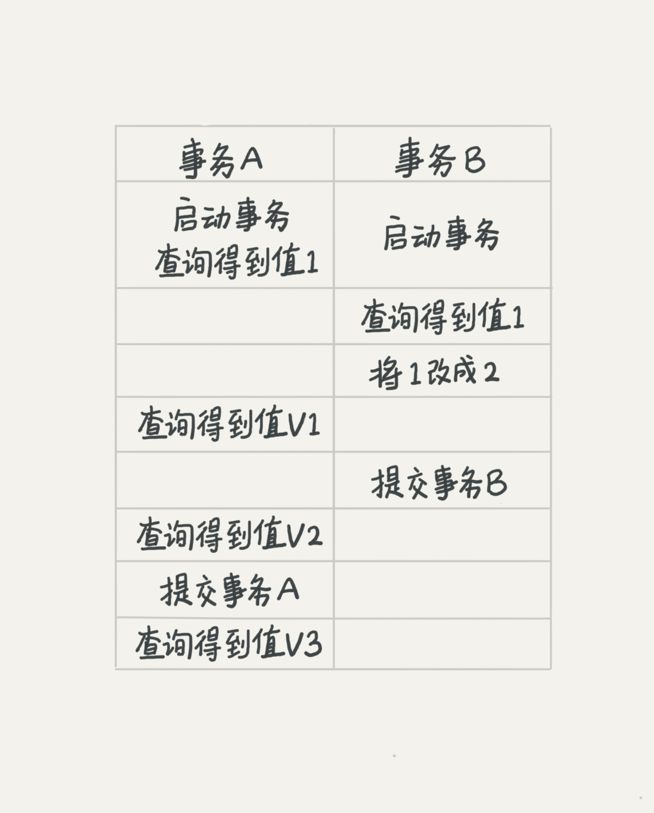

MySQL一些学习总结问答
- redo log是InnoDB引擎特有的；binlog是MySQL的Server层实现的，所有引擎都可以使用。
- redo log是物理日志，记录的是“在某个数据页上做了什么修改”；binlog是逻辑日志，记录的是这个语句的原始逻辑，比如“给ID=2这一行的c字段加1”。
- redo log是循环写的，空间固定会用完；binlog是可以追加写入的。“追加写”是指binlog文件写到一定大小后会切换到下一个，并不会覆盖以前的日志。
一个完整的交易过程：
账本记上 卖一瓶可乐（redo log为 prepare状态），
然后收钱放入钱箱（bin log记录）
然后回过头在账本上打个勾（redo log置为commit）
表示一笔交易结束。 如果收钱时交易被打断，回过头来整理此次交易，发现只有记账没有收钱，则交易失败，删掉账本上的记录（回滚）；
如果收了钱后被终止，然后回过头发现账本有记录（prepare）而且钱箱有本次收入（bin log），则继续完善账本（commit），本次交易有效。
Redolog和binlog具有关联行，在恢复数据时，redolog用于恢复主机故障时的未更新的物理数据，binlog用于备份操作。
每个阶段的log操作都是记录在磁盘的，在恢复数据时，redolog 状态为commit则说明binlog也成功，直接恢复数据；
如果redolog是prepare，则需要查询对应的binlog事务是否成功，决定是回滚还是执行。
有人问我联合索引的技巧，
回答的不是很好 总结：
1、覆盖索引：如果查询条件使用的是普通索引（或是联合索引的最左原则字段），查询结果是联合索引的字段或是主键，不用回表操作，直接返回结果，减少IO磁盘读写读取正行数据
2、最左前缀：联合索引的最左 N 个字段，也可以是字符串索引的最左 M 个字符
3、联合索引：根据创建联合索引的顺序，以最左原则进行where检索，比如（age，name）以age=1 或 age= 1 and name=‘张三’可以使用索引，单以name=‘张三’ 不会使用索引，考虑到存储空间的问题，还请根据业务需求，将查找频繁的数据进行靠左创建索引。
4、索引下推：like ‘hello%’and age >10 检索，MySQL5.6版本之前，会对匹配的数据进行回表查询。5.6版本后，会先过滤掉age<10的数据，再进行回表查询，减少回表率，提升检索速度
今天这个 alter table T engine=InnoDB
让我想到了我们线上的一个表, 记录日志用的, 会定期删除过早之前的数据. 最后这个表实际内容的大小才10G, 而他的索引却有30G. 在阿里云控制面板上看,就是占了40G空间. 这可花的是真金白银啊.后来了解到是 InnoDB 这种引擎导致的,虽然删除了表的部分记录,但是它的索引还在, 并未释放.只能是重新建表才能重建索引.alter table T engine=InnoDB
隔离性与隔离级别
提到事务，你肯定会想到ACID（Atomicity、Consistency、Isolation、Durability，即原子性、一致性、隔离性、持久性），今天我们就来说说其中I，也就是“隔离性”。
当数据库上有多个事务同时执行的时候，就可能出现脏读（dirty read）、不可重复读（non-repeatable read）、幻读（phantom read）的问题，为了解决这些问题，就有了“隔离级别”的概念。
查看mysql 事务隔离级别 show variables like ‘transaction_isolation’;
在谈隔离级别之前，你首先要知道，你隔离得越严实，效率就会越低。因此很多时候，我们都要在二者之间寻找一个平衡点。SQL标准的事务隔离级别包括：读未提交（read uncommitted）、读提交（read committed）、可重复读（repeatable read）和串行化（serializable ）。下面我逐一为你解释：
1.读未提交是指，一个事务还没提交时，它做的变更就能被别的事务看到。
2.读提交是指，一个事务提交之后，它做的变更才会被其他事务看到。
3.可重复读是指，一个事务执行过程中看到的数据，总是跟这个事务在启动时看到的数据是一致的。当然在可重复读隔离级别下，未提交变更对其他事务也是不可见的。
4.串行化，顾名思义是对于同一行记录，“写”会加“写锁”，“读”会加“读锁”。当出现读写锁冲突的时候，后访问的事务必须等前一个事务执行完成，才能继续执行。

我们来看看在不同的隔离级别下，事务A会有哪些不同的返回结果，也就是图里面V1、V2、V3的返回值分别是什么。
若隔离级别是“读未提交”， 则V1的值就是2。这时候事务B虽然还没有提交，但是结果已经被A看到了。因此，V2、V3也都是2。
若隔离级别是“读提交”，则V1是1，V2的值是2。事务B的更新在提交后才能被A看到。所以， V3的值也是2。
若隔离级别是“可重复读”，则V1、V2是1，V3是2。之所以V2还是1，遵循的就是这个要求：事务在执行期间看到的数据前后必须是一致的。
若隔离级别是“串行化”，则在事务B执行“将1改成2”的时候，会被锁住。直到事务A提交后，事务B才可以继续执行。所以从A的角度看， V1、V2值是1，V3的值是2。
主键索引的叶子节点存的是整行数据。在InnoDB里，主键索引也被称为聚簇索引（clustered index）。
非主键索引的叶子节点内容是主键的值。在InnoDB里，非主键索引也被称为二级索引（secondary index）。
根据上面的索引结构说明，我们来讨论一个问题：基于主键索引和普通索引的查询有什么区别？
如果语句是select * from T where ID=500，即主键查询方式，则只需要搜索ID这棵B+树；
如果语句是select * from T where k=5，即普通索引查询方式，则需要先搜索k索引树，得到ID的值为500，再到ID索引树搜索一次。这个过程称为回表。 也就是说，基于非主键索引的查询需要多扫描一棵索引树。因此，我们在应用中应该尽量使用主键查询。
基于上面的分析，我们来讨论一个问题，
如何安全地给小表加字段？ 首先我们要解决长事务，事务不提交，就会一直占着MDL锁。
在MySQL的information_schema 库的 innodb_trx 表中，你可以查到当前执行中的事务。
如果你要做DDL变更的表刚好有长事务在执行，要考虑先暂停DDL，或者kill掉这个长事务。
但考虑一下这个场景。如果你要变更的表是一个热点表，虽然数据量不大，但是上面的请求很频繁，而你不得不加个字段，你该怎么做呢？ 这时候kill可能未必管用，因为新的请求马上就来了。
比较理想的机制是，在alter table语句里面设定等待时间，如果在这个指定的等待时间里面能够拿到MDL写锁最好，拿不到也不要阻塞后面的业务语句，先放弃。之后开发人员或者DBA再通过重试命令重复这个过程。 MariaDB已经合并了AliSQL的这个功能，所以这两个开源分支目前都支持DDL NOWAIT/WAIT n这个语法。 ALTER TABLE tbl_name NOWAIT add column … ALTER TABLE tbl_name WAIT N add column …
在InnoDB事务中，行锁是在需要的时候才加上的，但并不是不需要了就立刻释放，而是要等到事务结束时才释放。这个就是两阶段锁协议。
知道了这个设定，对我们使用事务有什么帮助呢？那就是，如果你的事务中需要锁多个行，要把最可能造成锁冲突、最可能影响并发度的锁尽量往后放。我给你举个例子。 假设你负责实现一个电影票在线交易业务，顾客A要在影院B购买电影票。我们简化一点，这个业务需要涉及到以下操作： 1. 从顾客A账户余额中扣除电影票价；
- 给影院B的账户余额增加这张电影票价；
- 记录一条交易日志。
也就是说，要完成这个交易，我们需要update两条记录，并insert一条记录。当然，为了保证交易的原子性，我们要把这三个操作放在一个事务中。
那么，你会怎样安排这三个语句在事务中的顺序呢？ 试想如果同时有另外一个顾客C要在影院B买票，那么这两个事务冲突的部分就是语句2了。因为它们要更新同一个影院账户的余额，需要修改同一行数据。
根据两阶段锁协议，不论你怎样安排语句顺序，所有的操作需要的行锁都是在事务提交的时候才释放的。所以，如果你把语句2安排在最后，比如按照3、1、2这样的顺序，那么影院账户余额这一行的锁时间就最少。这就最大程度地减少了事务之间的锁等待，提升了并发度。
在 InnoDB 事务中，行锁是在需要的时候才加上的，但并不是不需要了就立刻释放，而是要等到事务结束时才释放。这个就是两阶段锁协议。
Mysql 解决死锁的两种策略：
1、超时检测，超过等待时间释放资源,变量是innodb_lock_wait_timeout; 查看innodb_lock_wait_timeout; show variables like ‘innodb_lock_wait_timeout’;
2、死锁检测 开始死锁检测的变量innodb_deadlock_detect; show variables like ‘innodb_deadlock_detect’;
热点行更新的解决策略:
降低并发度
拆行，一行拆多行
- Server 层限流，即同一时间进入更新的线程数
关闭死锁监测热点数据的死锁检测，是非常消耗cpu资源的（关闭的弊端是可能超时较多）
更新一个没有创建索引的列
1.可以自己实践一下,当加上limit1之后 更新语句的执行流程是先去查询在去更新,也就是查询sql为 select * from t where name = “abc” limit 1 for update,相当于扫描主键索引找到第一个满足name=“abc”的条件为止,此时锁的区间为(负无穷,当前行的id],如果在这个id之后的更新和插入时都不会锁住的,在这个id之前的更新和插入会阻塞,之后则不会阻塞
2.如果不加limit 1的话,因为此时是整个主键索引全表扫描则整个表锁住了
3.你说的回表的行锁,比如字段name有普通索引,在更新操作时普通索引会锁住的同时,如果更新操作需要回表的话对应的主键索引也会存在锁(主键索引锁临界锁会退化为行锁),普通索引(间隙锁和行锁)
事务与事务之间的隔离不应该影响最终数据的落地。就是说事务C先更新了数据，而后事务B也更新了同一份数据，以数据库的眼光来看这份数据的变动就是事务C的更新跟着事务B的更新，必须延续在一块而不能分开。 所以事务的更新必须是基于当前最新值来执行的，而读则是基于其视图，即可重复读的隔离，真的只是读层面的隔离。
在这个例子中，就是因为事务C的更新在前，事务B的更新必须延续事务C的结果，所以只能读取当前值再更新。而事务本身的更新是能被看到的，所以事务B再查询就只能是得到当前最新值。
InnoDB 的行数据有多个版本，每个数据版本有自己的 row trx_id，每个事务或者语句有自己的一致性视图。普通查询语句是一致性读，一致性读会根据 row trx_id 和一致性视图确定数据版本的可见性。对于可重复读，查询只承认在事务启动前就已经提交完成的数据；对于读提交，查询只承认在语句启动前就已经提交完成的数据；
Update和加锁的select都是当前读，当前读，可能会遇到阻塞的情况，获取锁后，读的也是已提交的最新版本
你也可以想一下，为什么表结构不支持“可重复读”？这是因为表结构没有对应的行数据，也没有 row trx_id，因此只能遵循当前读的逻辑。
Innodb 普通索引修改成唯一索引产生的 生产事故, 写多读少使用 changebuffer 可以加快执行速度(减少数据页磁盘 io);
但是,如果业务模型是 写后立马会做查询, 则会触发 changebuff 立即 merge 到磁盘, 这样 的场景磁盘 io 次数不会减少,反而会增加 changebuffer 的维护代价
唯一索引
需要将数页从磁盘加载到内存进行唯一约束判断，所以用不到change buffer，因为数据已经加载了；
普通索引
可以在不加载数据页的情况下，直接将更新操作写入change buffer，之后等到读取相关数据页或后台刷新时再进行merge；
第一种情况是，这个记录要更新的目标页在内存中。这时，InnoDB 的处理流程如下： 对于唯一索引来说，找到 3 和 5 之间的位置，判断到没有冲突，插入这个值，语句执行结束； 对于普通索引来说，找到 3 和 5 之间的位置，插入这个值，语句执行结束。
这样看来，普通索引和唯一索引对更新语句性能影响的差别，只是一个判断，只会耗费微小的 CPU 时间。
但，这不是我们关注的重点。
第二种情况是，这个记录要更新的目标页不在内存中。 这时，InnoDB 的处理流程如下： 对于唯一索引来说，需要将数据页读入内存，判断到没有冲突，插入这个值，语句执行结束；
对于普通索引来说，则是将更新记录在 change buffer，语句执行就结束了。
总结就是读：没区别，写：普通索引在不需要立即读时候可以很好的应用change buffer
如果所有的更新后面，都马上伴随着对这个记录的查询，那么你应该关闭 change buffer。而在其他情况下，change buffer 都能提升更新性能。
innodb_change_buffer_max_size设置为0
mysql> insert into t(id,k) values(id1,k1),(id2,k2);
分析这条更新语句，你会发现它涉及了四个部分：内存、redo log（ib_log_fileX）、 数据表空间（t.ibd）、系统表空间（ibdata1）。 数据表空间：就是一个个的表数据文件，对应的磁盘文件就是“表名.ibd”； 系统表空间：用来放系统信息，如数据字典等，对应的磁盘文件是“ibdata1”

这条更新语句做了如下的操作（按照图中的数字顺序）：
Page 1 在内存中，直接更新内存；
Page 2 没有在内存中，就在内存的 change buffer 区域，记录下“我要往 Page 2 插入一行”这个信息将上述两个动作记入 redo log 中（图中 3 和 4）。
做完上面这些，事务就可以完成了。
所以，你会看到，执行这条更新语句的成本很低，就是写了两处内存，然后写了一处磁盘（两次操作合在一起写了一次磁盘），而且还是顺序写的。
同时，图中的两个虚线箭头，是后台操作，不影响更新的响应时间。那在这之后的读请求，要怎么处理呢？ 比如，我们现在要执行 select * from t where k in (k1, k2)。 这里，我画了这两个读请求的流程图。如果读语句发生在更新语句后不久，内存中的数据都还在，那么此时的这两个读操作就与系统表空间（ibdata1）和 redo log（ib_log_fileX）无关了。所以，我在图中就没画出这两部分。

从图中可以看到：
读 Page 1 的时候，直接从内存返回。有几位同学在前面文章的评论中问到，WAL 之后如果读数据，是不是一定要读盘，是不是一定要从 redo log 里面把数据更新以后才可以返回？
其实是不用的。
你可以看一下图 3 的这个状态，虽然磁盘上还是之前的数据，但是这里直接从内存返回结果，结果是正确的。要读 Page 2 的时候，需要把 Page 2 从磁盘读入内存中， 然后应用 change buffer 里面的操作日志，生成一个正确的版本并返回结果。可以看到，直到需要读 Page 2 的时候，这个数据页才会被读入内存。
Page2这里的生成包括两个操作：
1.内存中merge.
2.merge后的结果下盘到表里
更新的时候，并不急着将数据刷回磁盘。而是先用change buffer缓存起来。
当你要执行SELECT的时候，那么再才将磁盘上的数据页缓存到内存中，然后应用这个页面相关的change buffer日志，可以返回可客户端，并且将最新值merge回磁盘
所以，如果要简单地对比这两个机制在提升更新性能上的收益的话，
redo log 主要节省的是随机写磁盘的 IO 消耗（转成顺序写），
而 change buffer 主要节省的则是随机读磁盘的 IO 消耗。
对于避免随机写，避免随机读我一直有疑问？？ 先假设没有 redo log，没有 change buffer，那事务提交时就会从磁盘上读取记录，进行更新，写回磁盘。
这个过程读取记录涉及随机读，写回磁盘如果有多条不连续在一起（同一页）的数据被更新，也涉及随机写。 有了 redo log, change buffer 以后，事务提交变成写内存，顺序写 redo log 的磁盘，这个没错。 但是 change buffer 进行 merge 或刷到磁盘的时候也是首先需要从磁盘中先读取数据，这个也是随机读吧？ 在内存merge以后刷到磁盘，如果有多条不连续的数据同样是随机写吧？
所以怎么能说避免了呢？ 对于 change buffer，当有查询来的时候，从磁盘读数据再 merge，总的来说更新时的读 + 查询时的读， 从两次变为了一次，确实是减少了一次读；
但是如果没有查询来的话，也是早晚需要刷到磁盘的，这时就没有减少了吧？ 对于写进磁盘，对同一页的数据如果能在内存累积多次不同的更新以后再一次刷进磁盘，同样是减少了随机写， 但如果累积的不是同一页，那同样是无法减少次数的。 所以我感觉正确的说法应该是可以减少随机读，减少随机写，而不是避免。
redo日志有分几十种类型的。redo做的事情，简单讲就是记录页的变化（WAL将页变化的乱序写转换成了顺序写）。
页是分多种的，比如 B+树索引页（主键 / 二级索引）、undo页（数据的多版本MVCC）、以及现在的change buffer页等等，这些页被redo记录后，就可以不着急刷盘了。
change buffer记录索引页的变化；但是change buffer本身也是要持久化的，而它持久化的工作和其他页一样，交给了redo日志来帮忙完成；
redo日志记录的是change buffer页的变化。 Change buffer持久化文件是 ibdata1，索引页持久化文件是 t.ibd
早，请您看看我以下疑问：
看完后感觉牵扯到之前的内容，又糊涂了。change buffer相当于推迟了更新操作，那对并发控制相关的是否有影响，比如加锁？我一直以为加锁需要把具体的数据页读到内存中来，才能加锁，然而并不是？
在change buffer中有此行记录的情况下，再次更改，是增加一条还是原地修改？
purge行为之后应该不会再产生redo log了吧？
从应用开发的角度看，还是由数据库保证唯一好。 作者回复: 1 3 好问题
- 锁是一个单独的数据结构，如果数据页上有锁，change buffer 在判断“是否能用”的时候，就会认为否
- 增加
- 是这样的，这个问题你分成两步来考虑。 第一步，merge其实是从磁盘读数据页到内存，然后应用，这一步都是更新的内存，同时写redolog
现在内存变成脏页了，跟磁盘数据不一样。之后就走刷脏页的流程。刷脏页也不用写。
普通索引和唯一索引总结:
选择普通索引还是唯一索引？ 对于查询过程来说：
A、普通索引，查到满足条件的第一个记录后，继续查找下一个记录，知道第一个不满足条件的记录 B、唯一索引，由于索引唯一性，查到第一个满足条件的记录后，停止检索
但是，两者的性能差距微乎其微。因为InnoDB根据数据页来读写的。
对于更新过程来说：
概念：change buffer 当需要更新一个数据页，如果数据页在内存中就直接更新，如果不在内存中，在不影响数据一致性的前提下，InnoDB会将这些更新操作缓存在change buffer中。下次查询需要访问这个数据页的时候，将数据页读入内存，然后执行change buffer中的与这个页有关的操作。
change buffer是可以持久化的数据。在内存中有拷贝，也会被写入到磁盘上
Purge:将change buffer中的操作应用到原数据页上，得到最新结果的过程，成为purge 访问这个数据页会触发purge，系统有后台线程定期purge，在数据库正常关闭的过程中，也会执行purge
唯一索引的更新不能使用change buffer
change buffer用的是buffer pool里的内存，change buffer的大小，可以通过参数innodb_change_buffer_max_size来动态设置。这个参数设置为50的时候，表示change buffer的大小最多只能占用buffer pool的50%。
将数据从磁盘读入内存涉及随机IO的访问，是数据库里面成本最高的操作之一。 change buffer 因为减少了随机磁盘访问，所以对更新性能的提升很明显。
change buffer使用场景 在一个数据页做purge之前，change buffer记录的变更越多，收益就越大。 对于写多读少的业务来说，页面在写完以后马上被访问到的概率比较小，此时change buffer的使用效果最好。这种业务模型常见的就是账单类、日志类的系统。
反过来，假设一个业务的更新模式是写入之后马上会做查询，那么即使满足了条件，将更新先记录在change buffer,但之后由于马上要访问这个数据页，会立即触发purge过程。 这样随机访问IO的次数不会减少，反而增加了change buffer的维护代价。所以，对于这种业务模式来说，change buffer反而起到了副作用。
索引的选择和实践： 尽可能使用普通索引。 redo log主要节省的是随机写磁盘的IO消耗(转成顺序写)，而change buffer主要节省的则是随机读磁盘的IO消耗。
思考题： change buffer不会丢失，因为change buffer是可以持久化的数据，在磁盘上占据了系统表空间ibdata，对应的内部系统表名为SYS_IBUF_TABLE。因此在异常关机的时候，不会丢失。
优化器的判断标准： 1、扫描的行数 2、是否使用临时表 3、是否排序
而优化器选择索引的目的，是找到一个最优的执行方案，并用最小的代价去执行语句。 在数据库里面，扫描行数是影响执行代价的因素之一。扫描的行数越少，意味着访问磁盘数据的次数越少，消耗的 CPU 资源越少。 当然，扫描行数并不是唯一的判断标准，优化器还会结合是否使用临时表、是否排序等因素进行综合判断。 我们这个简单的查询语句并没有涉及到临时表和排序，所以 MySQL 选错索引肯定是在判断扫描行数的时候出问题了。
MySQL 在真正开始执行语句之前，并不能精确地知道满足这个条件的记录有多少条，而只能根据统计信息来估算记录数。这个统计信息就是索引的“区分度”。 显然，一个索引上不同的值越多，这个索引的区分度就越好。而一个索引上不同的值的个数，我们称之为“基数”（cardinality）。也就是说，这个基数越大，索引的区分度越好。 Show index from t;
删除的时候是标记删除，所以很快。 建索引是要扫描数据和真正生成索引树，是会慢些
到这里，可能你的第一个疑问不是为什么不准，而是优化器为什么放着扫描 37000 行的执行计划不用，却选择了扫描行数是 100000 的执行计划呢？这是因为，如果使用索引 a，每次从索引 a 上拿到一个值，都要回到主键索引上查出整行数据，这个代价优化器也要算进去的。而如果选择扫描 10 万行，是直接在主键索引上扫描的，没有额外的代价。优化器会估算这两个选择的代价，从结果看来，优化器认为直接扫描主键索引更快。当然，从执行时间看来，这个选择并不是最优的。
优化器的错误判断，尽量使用主键索引，但有时主键索引不是最优的。
explain select * from t where (a between 1 and 1000) and (b between 50000 and 100000) order by b limit 1; （优化器为了减少排序代价，所以选择了索引b） 之前优化器选择使用索引 b，是因为它认为使用索引 b 可以避免排序（b 本身是索引，已经是有序的了，如果选择索引 b 的话，不需要再做排序，只需要遍历），所以即使扫描行数多，也判定为代价更小。
我们可以select * from t force index(a) 第二种就是将a 也加入到排序字段 第三种方法是，在有些场景下，我们可以新建一个更合适的索引，来提供给优化器做选择，或删掉误用的索引。
小结
今天我们一起聊了聊索引统计的更新机制，并提到了优化器存在选错索引的可能性。对于由于索引统计信息不准确导致的问题，你可以用 analyze table 来解决。 而对于其他优化器误判的情况，你可以在应用端用 force index 来强行指定索引，也可以通过修改语句来引导优化器，还可以通过增加或者删除索引来绕过这个问题。

我理解 session A 开启的事务对 session B的delete操作后的索引数据的统计时效产生了影响，因为需要保证事务A的重复读，在数据页没有实际删除，而索引的统计选择了N个数据页，这部分数据页不收到前台事务的影响，所以整体统计值会变大，直接影响了索引选择的准确性； InnoDB 在处理更新语句的时候，只做了写日志这一个磁盘操作。这个日志叫作 redo log（重做日志），也就是《孔乙己》里咸亨酒店掌柜用来记账的粉板，在更新内存写完 redo log 后，就返回给客户端，本次更新成功。 做下类比的话，掌柜记账的账本是数据文件，记账用的粉板是日志文件（redo log），掌柜的记忆就是内存。掌柜总要找时间把账本更新一下，这对应的就是把内存里的数据写入磁盘的过程，术语就是 flush。 在这个 flush 操作执行之前，孔乙己的赊账总额，其实跟掌柜手中账本里面的记录是不一致的。因为孔乙己今天的赊账金额还只在粉板上，而账本里的记录是老的，还没把今天的赊账算进去。 其实我感觉举得这个例子有一定误导性，会让人觉得磁盘数据文件更新是根据redo log来的，其实并不是。磁盘数据文件更新是刷脏页改变的，redo log的作用仅仅是在崩溃恢复的时候重建内存中的脏页。 当内存数据页跟磁盘数据页内容不一致的时候，我们称这个内存页为“脏页”。内存数据写入到磁盘后，内存和磁盘上的数据页的内容就一致了，称为“干净页”。

什么时候刷脏页：
flush缓存中的脏数据到磁盘有以下几种场景： redo log写满了，需要清除一部分redo log日志，将文件记录对应的部分从内存中刷新到磁盘； 缓存满了，这个时候需要清理出一些可用的内存页，如果要被清理的是脏页，那么就会将脏数据写到磁盘； mysql空闲的时候，就会去将脏页刷到磁盘，因为迟早要写的； mysql关机的时候，会将脏页写到磁盘；
疑问点： 为什么系统内存不足时，就要淘汰一些数据页面，将空出的内存给别的数据页使用。如果淘汰的是脏页，就要先将脏页写到磁盘里。为什么不直接把内存淘汰掉，下次需要请求的时候，从磁盘读入数据，然后拿redo log出来应用不就行了？这里其实是从性能考虑的。如果刷脏页一定会写盘，就保证了每个数据页有两种状态： 一种是内存里存在，内存里就肯定是正确的结果，直接返回； 另一种是内存里没有数据，就可以肯定数据文件上是正确的结果，读入内存后返回。这样的效率最高。
这里没讲清楚。为什么从性能考虑应该刷脏页，而不是丢掉。 其实是因为如果刷脏页，那么下次从磁盘读出来就是干净页，以后回省事；如果丢掉的话，下次从磁盘读出来的还是脏页，需要再刷一次脏页。 所以既然刷脏页无可避免，那早刷不如晚刷，毕竟现在刷还可以省一次读磁盘操作。
第一种是“redo log 写满了，要 flush 脏页”，这种情况是 InnoDB 要尽量避免的。因为出现这种情况的时候，整个系统就不能再接受更新了，所有的更新都必须堵住。如果你从监控上看，这时候更新数会跌为 0。 第二种是“内存不够用了，要先将脏页写到磁盘”，这种情况其实是常态。InnoDB 用缓冲池（buffer pool）管理内存，缓冲池中的内存页有三种状态：第一种是，还没有使用的； 第二种是，使用了并且是干净页； 第三种是，使用了并且是脏页。InnoDB 的策略是尽量使用内存，因此对于一个长时间运行的库来说，未被使用的页面很少。
InnoDB 的策略是尽量使用内存，因此对于一个长时间运行的库来说，未被使用的页面很少。而当要读入的数据页没有在内存的时候，就必须到缓冲池中申请一个数据页。这时候只能把最久不使用的数据页从内存中淘汰掉：如果要淘汰的是一个干净页，就直接释放出来复用；但如果是脏页呢，就必须将脏页先刷到磁盘，变成干净页后才能复用。
所以，刷脏页虽然是常态，但是出现以下这两种情况，都是会明显影响性能的： 一个查询要淘汰的脏页个数太多，会导致查询的响应时间明显变长； 日志写满，更新全部堵住，写性能跌为 0，这种情况对敏感业务来说，是不能接受的。 ## InnoDB 刷脏页的控制策略 show global variables like ‘innodb_io_capacity’ 接下来，我就来和你说说 InnoDB 脏页的控制策略，以及和这些策略相关的参数。 首先，你要正确地告诉 InnoDB 所在主机的 IO 能力，这样 InnoDB 才能知道需要全力刷脏页的时候，可以刷多快。 这就要用到 innodb_io_capacity 这个参数了，它会告诉 InnoDB 你的磁盘能力。这个值我建议你设置成磁盘的 IOPS。磁盘的 IOPS 可以通过 fio 这个工具来测试，下面的语句是我用来测试磁盘随机读写的命令： fio -filename=$filename -direct=1 -iodepth 1 -thread -rw=randrw -ioengine=psync -bs=16k -size=500M -numjobs=10 -runtime=10 -group_reporting -name=mytest
1.脏页比例 2.脏页刷盘速度 3.刷新相邻页面策略 （bufferpool脏页比例 或 redolog 都可能成为读写sql的瓶颈） 1. 脏页比例默认75%，一定不要让其接近75% innodb_max_dirty_pages_pct =Innodb_buffer_pool_pages_dirty/Innodb_buffer_pool_pages_total 2. 刷脏页速度 nnodb_io_capacity定义的能力乘以R%来控制刷脏页的速度 3. innodb_flush_neighbors=0（不开启脏页相邻淘汰） （对于机械硬盘顺序读写会有提升，ssd无提升。iops普通机械硬盘只有几百，ssd有上千，可以不开启） 4. 避免大量刷脏页，脏页flush可能会产生内存抖动 # 查看脏页比例 show global variables like ‘innodb_max_dirty_pages_pct’
参数 innodb_max_dirty_pages_pct 是脏页比例上限，默认值是 75%。InnoDB 会根据当前的脏页比例（假设为 M），算出一个范围在 0 到 100 之间的数字，计算这个数字的伪代码类似这样：
F1(M) { if M>=innodb_max_dirty_pages_pct then return 100; return 100*M/innodb_max_dirty_pages_pct; }
InnoDB 每次写入的日志都有一个序号，当前写入的序号跟 checkpoint 对应的序号之间的差值，我们假设为 N。InnoDB 会根据这个 N 算出一个范围在 0 到 100 之间的数字，这个计算公式可以记为 F2(N)。F2(N) 算法比较复杂，你只要知道 N 越大，算出来的值越大就好了。
然后，根据上述算得的 F1(M) 和 F2(N) 两个值，取其中较大的值记为 R，之后引擎就可以按照 innodb_io_capacity 定义的能力乘以 R% 来控制刷脏页的速度。 上述的计算流程比较抽象，不容易理解，所以我画了一个简单的流程图。图中的 F1、F2 就是上面我们通过脏页比例和 redo log 写入速度算出来的两个值。

现在你知道了，InnoDB 会在后台刷脏页，而刷脏页的过程是要将内存页写入磁盘。所以，无论是你的查询语句在需要内存的时候可能要求淘汰一个脏页，还是由于刷脏页的逻辑会占用 IO 资源并可能影响到了你的更新语句，都可能是造成你从业务端感知到 MySQL“抖”了一下的原因。 要尽量避免这种情况，你就要合理地设置 innodb_io_capacity 的值，并且平时要多关注脏页比例，不要让它经常接近 75%。
一旦一个查询请求需要在执行过程中先 flush 掉一个脏页时，这个查询就可能要比平时慢了。
而 MySQL 中的一个机制，可能让你的查询会更慢：在准备刷一个脏页的时候，如果这个数据页旁边的数据页刚好是脏页，就会把这个“邻居”也带着一起刷掉；而且这个把“邻居”拖下水的逻辑还可以继续蔓延，也就是对于每个邻居数据页，如果跟它相邻的数据页也还是脏页的话，也会被放到一起刷。
在 InnoDB 中，innodb_flush_neighbors 参数就是用来控制这个行为的，值为 1 的时候会有上述的“连坐”机制，值为 0 时表示不找邻居，自己刷自己的。找“邻居”这个优化在机械硬盘时代是很有意义的，可以减少很多随机 IO。
机械硬盘的随机 IOPS 一般只有几百，相同的逻辑操作减少随机 IO 就意味着系统性能的大幅度提升。而如果使用的是 SSD 这类 IOPS 比较高的设备的话，我就建议你把 innodb_flush_neighbors 的值设置成 0。 因为这时候 IOPS 往往不是瓶颈，而“只刷自己”，就能更快地执行完必要的刷脏页操作，减少 SQL 语句响应时间。在 MySQL 8.0 中，innodb_flush_neighbors 参数的默认值已经是 0 了。
Flush 一般是说刷脏页， purge一般是指清undo log, merge一般是指应用change buffer
1：MySQL抖一下是什么意思？
抖我认为就是不稳定的意思，一个SQL语句平时速度都挺快的，偶尔会慢一下且没啥规律，就是抖啦！
2：MySQL为啥会抖一下？
因为运行的不正常了，或者不稳定了，需要花费更多的资源处理别的事情，会使SQL语句的执行效率明显变慢。针对innoDB导致MySQL抖的原因，主要是InnoDB 会在后台刷脏页，而刷脏页的过程是要将内存页写入磁盘。所以，无论是你的查询语句在需要内存的时候可能要求淘汰一个脏页，还是由于刷脏页的逻辑会占用 IO 资源并可能影响到了你的更新语句，都可能是造成你从业务端感知MySQL“抖”了一下的原因。
3：MySQL抖一下有啥问题？
很明显系统不稳定，性能突然下降对业务端是很不友好的。
4：怎么让MySQL不抖？
设置合理参数配配置，尤其是设置 好innodb_io_capacity 的值，并且平时要多关注脏页比例，不要让它经常接近 75%
5：啥是脏页？
当内存数据页跟磁盘数据页内容不一致的时候，我们称这个内存页为“脏页”。
按照这个定义感觉脏页是不可避免的，写的时候总会先写内存再写磁盘和有没有用WAL没啥关系？
6：啥是干净页？
内存数据写入到磁盘后，内存和磁盘上的数据页的内容就一致了，称为“干净页”。
7：脏页是咋产生的？
因为使用了WAL技术，这个技术会把数据库的随机写转化为顺序写，但副作用就是会产生脏页。
8：啥是随机写？为啥那么耗性能？
随机写我的理解是，这次写磁盘的那个扇区和上一次没啥关系，需要重新定位位置，机械运动是很慢的即使不是机械运动重新定位写磁盘的位置也是很耗时的。
9：啥是顺序写？
顺序写我的理解是，这次写磁盘那个扇区就在上一次的下一个位置，不需要重新定位写磁盘的位置速度当然会快一些。
10：WAL怎么把随机写转化为顺序写的？
写redolog是顺序写的，先写redolog等合适的时候再写磁盘，间接的将随机写变成了顺序写，性能确实会提高不少。